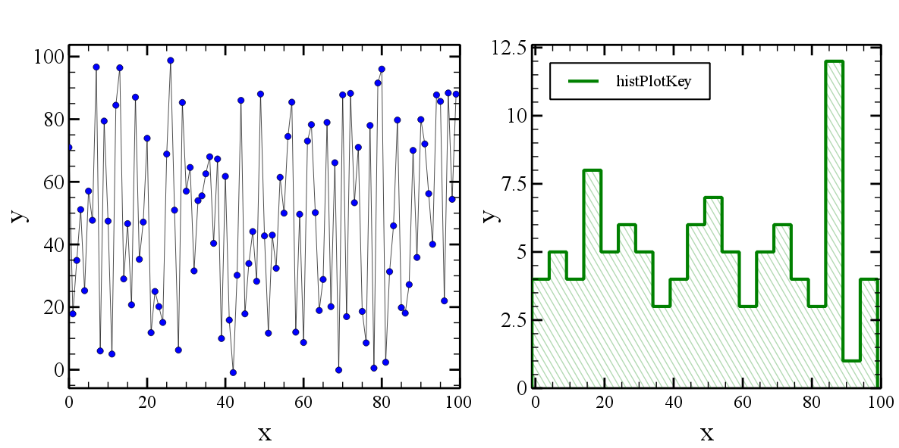
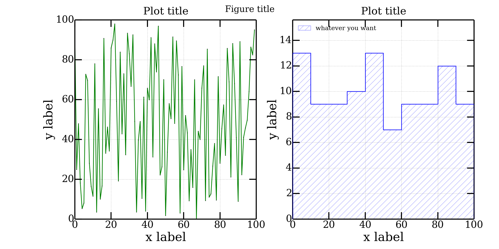

Python plot examples
29/Sep 2014
Two examples on how to make plots with Veusz and
Matplotlib.
I prefer Veusz because it’s easier to configure, modify and it produces
perfect pdf plots, but sometimes Matplotlib it’s faster for producing just
a draft plot to inspect data!
#!/usr/bin/env python
# -*- coding: utf8 -*-
from __future__ import division # no more "zero" integer division bugs!:P
import time
import numpy as np
import veusz.embed as ve
def sm_hist(data, delta=5, n_bin=None, range_=None):
dataMin = np.floor(data.min())
dataMax = np.ceil(data.max())
n_bin = np.ceil(1.*(dataMax-dataMin) / delta)
range_ = (dataMin, dataMin + n_bin * delta)
counts, bin_edges = np.histogram(data, n_bin, range_, density = False)
return counts, bin_edges
def sm_hist2(data, delta=5):
dataMin = np.floor(data.min())
dataMax = np.ceil(data.max())
n_bin = np.ceil(1.*(dataMax-dataMin) / delta) + 1
idxs = ((data - dataMin) / delta).astype(int)
counts = np.zeros(n_bin)
bin_edges = np.arange(dataMin, dataMax+2, delta)
for idx in idxs:
counts[idx] += 1
counts = np.hstack((np.array([0]), counts, np.array([0])))
bin_edges = np.hstack((bin_edges[0], bin_edges, bin_edges[-1]))
return counts, bin_edges
def plotFunc(inpath="./", outpath="./"):
font = "Times New Roman"
colors = [u'blue', u'green']
xmin = ["auto", "auto"]
xmax = ["auto", "auto"]
ymin = ["auto", 0]
ymax = ["auto", "auto"]
xData = np.arange(100)
yData = np.random.randint(0, 100, size=100) + np.sin(np.arange(100))
figure = ve.Embedded("Window_1")
page = figure.Root.Add('page', width = '30cm', height='15cm')
grid = page.Add('grid', autoadd = False, rows = 1, columns = 2,
scaleRows=[0.2],
topMargin='1cm',
bottomMargin='1cm'
)
graphList = []
graphList.append(grid.Add('graph', name="scatter", autoadd=False,
hide = False,
Border__width = '2pt',
leftMargin = '0.6cm',
rightMargin = '0.4cm',
topMargin = '0.5cm',
bottomMargin = '1cm',
))
graphList.append(grid.Add('graph', name="hist", autoadd=False,
hide = False,
Border__width = '2pt',
leftMargin = '2cm',
rightMargin = '0.4cm',
topMargin = '0.5cm',
bottomMargin = '1cm',
))
for i in range(len(graphList)):
graphList[i].Add('axis', name='x', label = "x",
min = xmin[i],
max = xmax[i],
log = False,
Label__size = '25pt',
Label__font = font,
TickLabels__size = '17pt',
TickLabels__format = u'Auto',
MajorTicks__width = '2pt',
MajorTicks__length = '10pt',
MinorTicks__width = '1pt',
MinorTicks__length = '6pt'
)
graphList[i].Add('axis', name='y', label = "y",
direction = 'vertical',
min = ymin[i],
max = ymax[i],
log = False,
autoRange = u'+5%',
Label__size = '25pt',
Label__font = font,
TickLabels__size = '20pt',
TickLabels__format = u'Auto',
MajorTicks__width = '2pt',
MajorTicks__length = '10pt',
MinorTicks__width = '1pt',
MinorTicks__length = '6pt'
)
graphList[0].Add('xy', key="scatterPlotKey", name='scatterPlotName',
marker = u'circle',
MarkerFill__color = colors[0],
markerSize = u'3pt',
)
xDataName = "xScatterData"
yDataName = "yScatterData"
figure.SetData(xDataName, xData)
figure.SetData(yDataName, yData)
graphList[0].scatterPlotName.xData.val = xDataName
graphList[0].scatterPlotName.yData.val = yDataName
counts, bin_edges = sm_hist2(yData, delta=5)
graphList[1].Add('xy', key="histPlotKey", name='histPlotName',
xData = bin_edges,
yData = counts,
marker = 'none',
PlotLine__steps = u'left',
PlotLine__color = colors[1],
PlotLine__style = u"solid",
PlotLine__width = u'3',
FillBelow__color = colors[1],
FillBelow__style = "forward 2",
FillBelow__hide = False,
FillBelow__transparency = 70,
#FillBelow__backtransparency = 50,
FillBelow__linewidth = '1pt',
FillBelow__linestyle = 'solid',
FillBelow__backcolor = "white",
FillBelow__backhide = True,
Label__posnHorz = 'right',
Label__size = '14pt',
Label__color = 'black'
)
histKey = graphList[1].Add('key', autoadd=False,
horzPosn = 'left',
vertPosn = 'top',
Text__font = font,
Text__size = '15',
Border__width = '1.5pt'
)
end = raw_input("Press any key to finish...")
figure.Save("example.vsz")
figure.Export("example.png", backcolor='#ffffff')
figure.Export("example.pdf")
if __name__ == "__main__":
inpath = "./"
outpath = './'
tt = time.time()
plotFunc(inpath, outpath)
print "Done in ", time.time()-tt, " seconds."

#!/usr/bin/env python
# -*- coding: utf8 -*-
from __future__ import division # no more "zero" integer division bugs!:P
import time
import numpy as np
import matplotlib.pylab as plt
import matplotlib.font_manager as font_manager
# SM like style
params = {'backend': 'png',
'font.family': "serif",
'font.size': 25,
'axes.labelsize': 35,
#'text.fontsize': 30,
'legend.fontsize': 30,
'xtick.labelsize': 28,
'xtick.major.size': 20.0,
'xtick.major.width': 3.0,
'xtick.minor.size': 12.0,
'xtick.minor.width': 2,
'ytick.labelsize': 28,
'ytick.major.size': 20.0,
'ytick.major.width': 3.0,
'ytick.minor.size': 12.0,
'ytick.minor.width': 2,
#'text.usetex': True,
'axes.linewidth': 3.0,
'lines.linewidth': 2,
'lines.markersize': 15,
'axes.grid': False,
'grid': {'color':'gray', 'linestyle':'-', 'linewidth':1},
'figure.figsize': (10,10),
'figure.subplot.left': 0.15, # the left side of the subplots of the figure
'figure.subplot.right' : 0.95, # the right side of the subplots of the figure
'figure.subplot.bottom' : 0.12, # the bottom of the subplots of the figure
'figure.subplot.top' : 0.92, # the top of the subplots of the figure
'figure.subplot.wspace' : 0.2, # the amount of width reserved for blank space between subplots
'figure.subplot.hspace' : 0.2, # the amount of height reserved for white space between subplots
'figure.figsize': (12, 12)
}
plt.rcParams.update(params)
def sm_hist(data, delta=5, n_bin=None, range_=None):
dataMin = np.floor(data.min())
dataMax = np.ceil(data.max())
n_bin = np.ceil(1.*(dataMax-dataMin) / delta)
range_ = (dataMin, dataMin + n_bin * delta)
counts, bin_edges = np.histogram(data, n_bin, range_, density = False)
# These two lines double the points let you make the histogram
counts = np.ravel(zip(counts,counts))
bin_edges = np.ravel(zip(bin_edges,bin_edges))
counts = np.hstack((np.array([0]), counts, np.array([0])))
return counts, bin_edges
def sm_hist2(data, delta=5):
dataMin = np.floor(data.min())
dataMax = np.ceil(data.max())
n_bin = np.ceil(1.*(dataMax-dataMin) / delta) + 1
idxs = ((data - dataMin) / delta).astype(int)
counts = np.zeros(n_bin)
bin_edges = np.arange(dataMin, dataMax+delta, delta)
for idx in idxs:
counts[idx] += 1
print counts
# These two lines double the points let you make the histogram
counts = np.ravel(zip(counts,counts))
bin_edges = np.ravel(zip(bin_edges,bin_edges))
counts = np.hstack((np.array([0]), counts))
bin_edges = np.hstack((bin_edges, bin_edges[-1]))
return counts, bin_edges
def singlePlotScatter(xData, yData, nRows, nCols, x0, y0, rowspan, colspan):
ax = plt.subplot2grid((nRows,nCols), (x0,y0), rowspan, colspan)
ax.set_xlabel("x label")
ax.set_ylabel("y label")
ax.set_xscale("linear")
ax.set_yscale("linear")
ax.set_title("Plot title")
ax.title.set_y(1.02) # adjust title position
ax.xaxis.grid(True, which="both")
ax.yaxis.grid(True, which="major")
ax.plot(xData, yData,
color = "green",
markeredgewidth = 0.8,
linestyle = '-',
linewidth = 2,
marker = 'o',
markersize = 1,
label = "label")
return ax
def singlePlotHist(yData, nRows, nCols, x0, y0, rowspan, colspan):
ax = plt.subplot2grid((nRows,nCols), (x0,y0), rowspan, colspan)
ax.set_xlabel("x label")
ax.set_ylabel("y label")
ax.set_xscale("linear")
ax.set_yscale("linear")
ax.set_title("Plot title")
ax.title.set_y(1.02) # adjust title position
ax.xaxis.grid(True, which="both")
ax.yaxis.grid(True, which="major")
counts, bin_edges = sm_hist2(yData, delta = 10)
ax.set_ylim((0, 1.2*counts.max()))
ax.plot(bin_edges, counts,
color = "blue",
alpha = 0.8,
linewidth = 2,
antialiased = True,
zorder = 3
)
ax.fill(bin_edges, counts,
alpha = 0.5,
hatch = "/",
edgecolor = "blue",
facecolor = "white",
antialiased = True,
label = "whatever you want"
)
ax.legend(loc='upper left', numpoints = 1, prop=font_manager.FontProperties(size=18)).draw_frame(False)
return ax
if __name__ == "__main__":
tt = time.time()
xData = np.arange(100)
yData = np.random.randint(0, 100, size=100) + np.sin(np.arange(100))
fig = plt.figure()
fig.suptitle("Figure title")
axs = []
nPlots = 2
axs.append(singlePlotScatter(xData, yData, nRows=1, nCols=2, x0=0, y0=0, rowspan=1, colspan=1))
axs.append(singlePlotHist(yData, nRows=1, nCols=2, x0=0, y0=1, rowspan=1, colspan=1))
fig.set_size_inches(20, 10)
plt.savefig("./grid.png", dpi=100)
plt.close(fig)
print "Done in ", time.time()-tt, " seconds."

More Reading